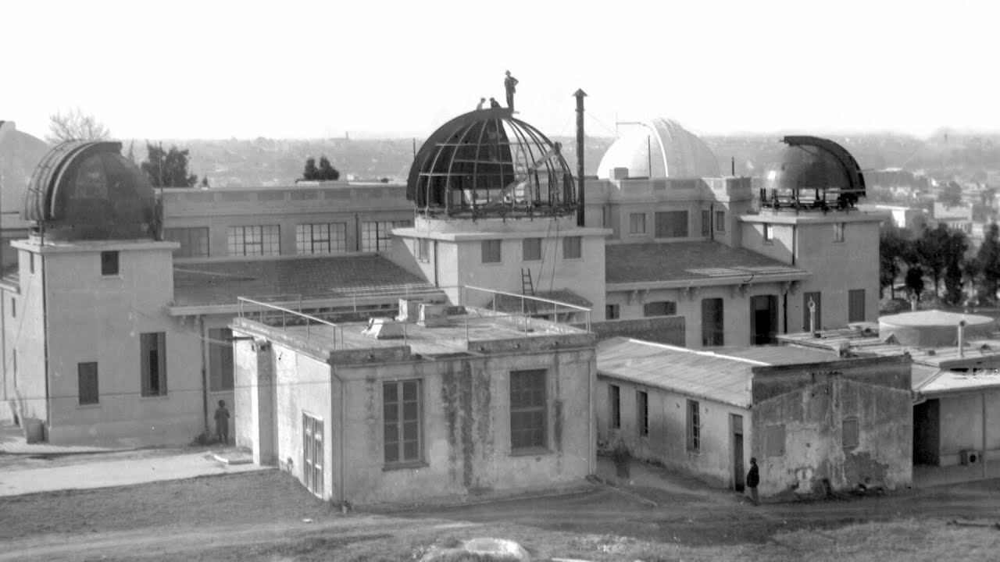
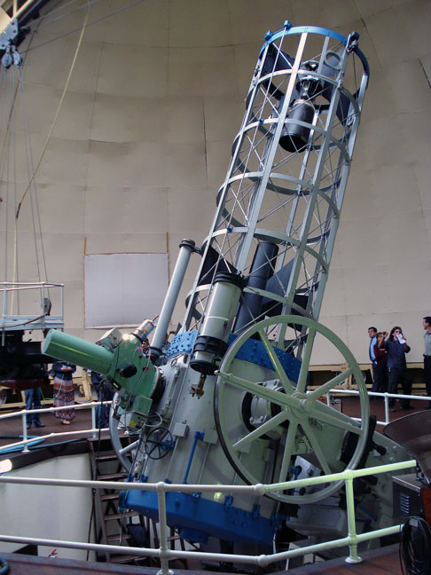

Asociación de Observatorios Argentinos
La investigacién astronómica sistemática en la Argentina comenzó con la
fundación, por el Presidente Sarmiento, del Observatorio Astronómico de Córdoba
el 24 de octubre de 1871; aunque para esta fecha del comienzo oficial del Observatorio, su director Benjamin A. Gould

con algún ayudante, habían trabajado durante el año anterior (1870) a la fundación y logrado ya el primer trabajo notorio
denominado la "URANOMETRIA ARGENTINA".
Esta obra sería el paso previo a la "CORDOBA DURCHMUNGSTERUNG", catálogo de posiciones y brillos
estelares del hemisferio austral, aun usado como referencia fundamental de los
cielos del sur.
Con posterioridad, en 1881 y 1882 se fundaron el Observatorio Naval y el
Observatorio de La Plata respectivamente.
Mas de medio siglo después de la creación del primer observatorio, se
fundó en 1935 el Observatorio de Fisica Cósmica de San Miguel, en la provincia
de Buenos Aires.
El Observatorio Naval está dedicado principalmente a prover el servicio
de hora oficial al pais, y en los ultimos años a la mecánica celeste. El Observatorio
de San Miguel, desde sus comienzos, estuvo dedicado a problemas de observacion
solar y al registro de datos meteorológicos, a mediados de los años 60, y por un
lapso de dos décadas aproximadamente, estuvo mas especificamente involucrado
con la geoheliofisica y con la problematica espacial, existiendo por entonces el
"Centro Espacial San Miguel”
Los observatorios del Siglo XX
Desde los años 70 del siglo pasado y hasta la mitad del siglo XX el
desarrollo de la astronomia fue practicamente tarea de los Observatorios de
Cordoba y de La Plata, y las investigaciones se centraron casi exclusivamente en la
Astrometria. Aunque también se desarrollaron y publicaron trabajos en la
astrofisica, acompañando en modo pionero la tendencia de la época en algunos
lugares del hemisferio norte.

Con la instalación del telescopio reflector de 1.54 m en la Estacion
Astrofisica de Bosque Alegre del Observatorio de Córdoba, por obra del Dr.
Enrique Gaviola, se inauguró definitivamente la etapa de investigación astrofisica
en el pais continuando la labor inciada por C.D.Perrrine con su reflector de 0.76 m
desde la ciudad de Córdoba.
En el año 1953 se fundó en San Juan el Observatorio Félix Aguilar, que
con su Estación de Altura "El Leoncito", hoy "C.U.Cesco”, y en convenio con las
universidades de Yale y Columbia comenzaron a dar impulso a modemas técnicas
astrométricas.
Durante 1962 fue creado el Instituto Argentino de Radioastronomia (IAR)
por las Universidades de La Plata y Buenos Aires y por el CONICET, siendo hoy
un Instituto de éste, Posteriormente en 1969 se creó el Instituto de Astronomia y
Fisica del Espacio (IAFE), Instituto también del CONICET, que por convenio con
la Universidad de Buenos Aires funciona en su Facultad de Ciencias
En el año 1989 se inauguró en San Juan el Complejo Astronémico "El
Leoncito" (CASLEO), una facilidad nacional, que tuvo sus origenes con la
adquisición de un telescopio reflector de 2.15 m lograda por el entonces director
del Observatorio de la Plata, Prof. Jorge Sahade, y finalmente erigido en San Juan
por el esfuerzo de los Observatorios de La Plata, San Juan y Córdoba, el
CONICET y la SECYT.
Otras instituciones astronómicas de Argentina
Deben agregarse a las instituciones y facilidades mencionadas otras existentes, vinculadas o no con las anteriores, a saber:
- Estación Astronómica de Rio Grande (EAGR) en Tierra del Fuego, creada en 1976 mediante un convenio entre instituciones argentinas, la Universidad de Bensangon, y operada actualmente por el Observatorio de La Plata,
- Estación Cenital Punta Indio, que opera por convenio entre el Observatorio de La Plata, el Observatorio Naval de Washington y el Servicio de Hidrografia Naval
- Observatorio Municipal de Rosario
En lo que se refiere a la formacién de astrónomos profesionales, en la Argentina existen dos centros: La Facultad de Ciencias Astronómicas y Geofisicas de la Universidad Nacional de La Plata, fundada como Instituto Superior en 1935 y la Facultad de Matematica Astronomia y Fisica (FAMAF) de la Universidad Nacional de Córdoba, también creada a partir de un instituto universitario (IMAF) fundado en 1957.